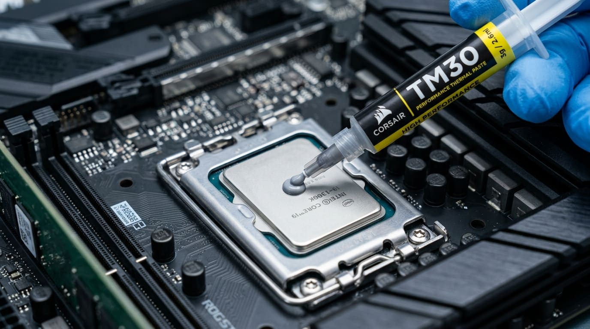

Servicio técnico de computadores y portátiles en Bogotá
Pedro Roa revisa, repara y arma computadores, portátiles e impresoras. Elige qué le pasa a tu equipo y se lo mandas por WhatsApp ya explicado.
¿Qué le pasa a tu equipo?
Toca las paradas que describen tu caso. Todas las líneas llegan a Pedro.
Pedro Roa
Estación final · Bogotá
- Elige una o más paradas y tu mensaje se arma solo.
Se abre WhatsApp con el mensaje listo. No se envía nada hasta que lo mandes tú.
Las cuatro líneas de servicio
Mantenimiento y reparación
Limpieza, pasta térmica, optimización, reparación de fallas y upgrades de SSD, memoria y refrigeración.
Ver la líneaPC a la medida y GPU
Computadores armados según lo que haces y tu presupuesto, y asesoría para elegir tu tarjeta gráfica.
Ver la líneaImpresoras y soporte remoto
Impresoras de tinta continua y láser, y ayuda inmediata por AnyDesk sin que tengas que moverte.
Ver la líneaSoftware y periféricos
Formateo, virus, licencias originales de Windows y Office, y teclados, ratones y monitores.
Ver la líneaCómo es el viaje
Cuéntale qué pasa
Escribes por WhatsApp con la marca y el modelo de tu equipo y lo que notas.
Diagnóstico
Pedro revisa el equipo en tu casa, en el laboratorio o por AnyDesk y te dice qué tiene.
Presupuesto claro
Sabes cuánto cuesta antes de que se toque nada, sin compromiso.
Reparación y pruebas
Se hace el trabajo y se prueba la estabilidad del equipo antes de devolvértelo.
Entrega con garantía
Recibes un informe técnico y garantía por escrito.

Dónde te atiende
A domicilio en Bogotá
Pedro va a tu casa u oficina para el diagnóstico y el servicio. Escríbenos tu barrio o localidad para confirmar la cobertura y las condiciones del domicilio.
En laboratorio
Para reparaciones de microelectrónica, pruebas de estabilidad prolongadas y ensamble de computadores a la medida. El equipo vuelve a ti calibrado.
Remoto por AnyDesk
Para fallas de software, virus, impresoras o licencias, sin salir de casa y a nivel nacional.
Preguntas frecuentes
¿Cuánto cuesta el mantenimiento de un computador en Bogotá?
Depende del equipo (portátil o torre) y de lo que necesite: limpieza y cambio de pasta térmica, un upgrade o una reparación. Escríbenos por WhatsApp con la marca y el modelo y te damos un presupuesto exacto, sin compromiso.
¿Prestan servicio técnico de computadores a domicilio en Bogotá?
Sí. Pedro hace el diagnóstico y el servicio en tu casa u oficina en Bogotá. Escríbenos tu barrio o localidad para confirmar la cobertura y las condiciones del domicilio. Si la reparación exige microelectrónica o pruebas prolongadas, el equipo se lleva al laboratorio y se devuelve calibrado.
¿Cuánto demora la reparación o el mantenimiento?
Depende del trabajo: un mantenimiento o un cambio de memoria o SSD no se parece a la reparación de una tarjeta madre o al ensamble de un computador a la medida, que necesitan pruebas de estabilidad. Al darte el presupuesto, Pedro te confirma el plazo de tu caso.
¿Los servicios y componentes tienen garantía?
Sí. Los trabajos de reparación, mantenimiento y los repuestos tienen garantía por escrito, y recibes un informe técnico. La duración depende del tipo de trabajo y queda indicada en el presupuesto.
¿Qué marcas y tipos de equipos atienden?
Todas las marcas líderes de computadores y portátiles (Asus, Lenovo, Dell, HP, Acer, Apple Mac, MSI y otras), además de torres personalizadas y computadores de escritorio armados para gaming, arquitectura y oficina.
¿Cómo funciona el soporte técnico remoto por AnyDesk?
Es una conexión rápida para resolver fallas de software, virus, configuración de impresoras o licencias sin salir de casa. Descargas AnyDesk, autorizas el acceso temporal y ves en tu pantalla cada paso que Pedro realiza, en tiempo real. Puedes cortar la sesión cuando quieras.
¿Cómo puedo pagar?
En efectivo, por transferencia bancaria, Nequi o Daviplata.
Cuéntale a Pedro qué le pasa a tu equipo
Cuéntale qué le pasa a tu equipo. Diagnóstico honesto y presupuesto claro, sin compromiso.